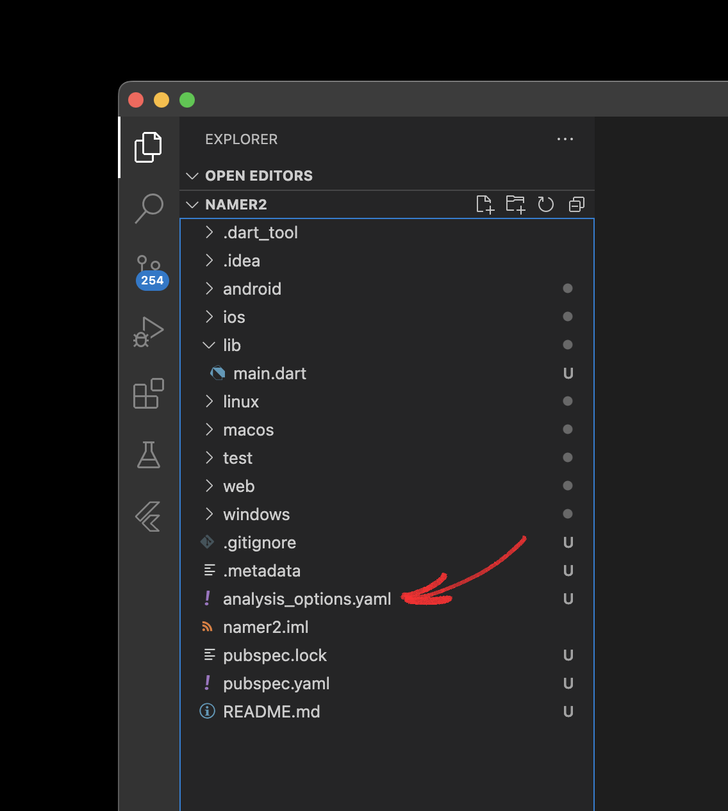

Open another configuration file in the project, analysis_options.yaml.

Replace its contents with the following:
1 2 3 4 5 6 7 8 9 10 | |
This file determines how strict Flutter should be when analyzing your code. Since this is your first foray into Flutter, you're telling the analyzer to take it easy. You can always tune this later. In fact, as you get closer to publishing an actual production app, you will almost certainly want to make the analyzer stricter than this.